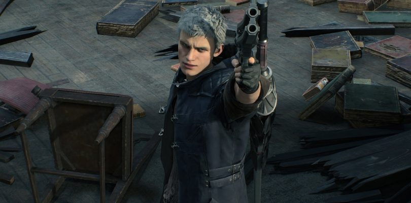
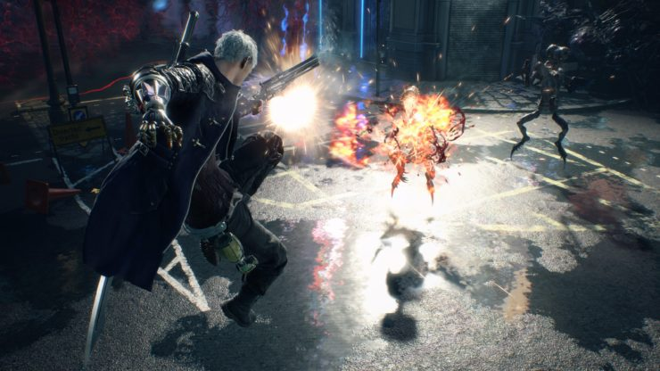

|
Han pasado varios años desde los sucesos de DMC4, y Nero ha perdido su brazo demoníaco (o Devil Bringer). Pero el jovencísimo cazador de demonios ha creado su propia filial de
Además de su presentación, el tráiler nos ha dejado el primer gameplay de Devil May Cry 5. Tendrá lugar en Red Grave City, ciudad invadida por los demonios después de que varias 
Y tranquilos, que como no podría ser de otra forma, el tráiler termina revelando a Dante, nuestro querido cazademonios y protagonista original de la saga. Porque se ha confirmado que Tendremos que esperar hasta la primavera de 2019 para echarle el guante, pero antes, durante la Gamescom 2018, conoceremos nuevos detalles.  |